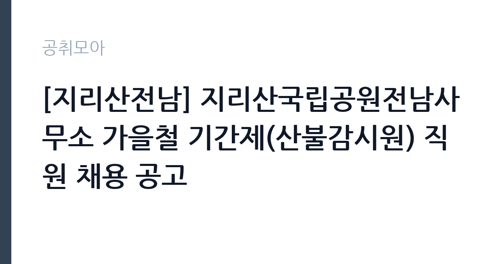

[공공기관] [지리산전남] 지리산국립공원전남사무소 가을철 기간제(산불감시원) 직원 채용 공고
국립공원공단 지리산국립공원전남사무소 · 전남 · 마감 2026-11-09 (D-10) · 출처 나라일터

한눈에 보는 모집 조건
| 기관 | 국립공원공단 지리산국립공원전남사무소 |
|---|---|
| 공고명 | [지리산전남] 지리산국립공원전남사무소 가을철 기간제(산불감시원) 직원 채용 공고 |
| 고용형태 | 기간제 |
| 근무지 | 전남 |
| 게시일 | 2026-10-30 |
| 마감일 | 2026-11-09 (D-10) |
지원자격, 이렇게 읽으세요
- 기간제(산불감시) 3명
- 접수 ~2026-11-09 마감
- 세부 조건은 원문 공고문 확인
기간제 근로자는 근로계약 기간이 정해진 신분입니다. 계약 기간과 갱신 가능 여부가 근로계약서에 명시되며 기간 만료 시 근로관계가 종료됩니다. 결원 보충이나 특정 사업 기간에 맞춰 채용되는 경우가 많아 업무 범위가 명확합니다. 이번 공고는 국립공원공단 지리산국립공원전남사무소에서 직접 진행하는 자체 전형으로, 응시자격과 제출서류는 공고문에 항목별로 제시됩니다. 산불 대응 직무는 체력과 건강 상태를 가장 중요하게 봅니다. 등짐 장비를 메고 산을 오를 수 있어야 하므로, 채용 단계에서 체력검정이나 신체검사를 실시하는 경우가 많습니다. 운전면허 소지자를 우대하거나 필수로 요구하는 공고가 일반적입니다. 산림 관련 자격이나 학과 전공은 우대 사항이며 필수는 아닙니다. 결격사유와 연령 기준은 공고문에 명시되어 있으므로 원문을 확인해야 합니다. 서류는 접수 마감 이후 보완이 되지 않으므로 자격 요건과 증빙 서류를 마감 전에 모두 갖춰야 합니다. 공고문에 명시된 우대 사항은 해당 여부를 확인해 증빙을 첨부해야 가점이 반영됩니다. 자격 취득 예정자는 채용 공고의 예정자 허용 조항을 먼저 확인해야 합니다. 조항이 없으면 지원 자체가 반려될 수 있습니다.
이 공고의 포인트
이 공고의 첫 번째 포인트는 고용 형태입니다. 계약 기간이 정해져 있어 근무 종료 시점이 명확합니다. 그만큼 짧은 기간에 어떤 실적을 남길지가 중요해집니다. 두 번째는 업무 범위가 명확하다는 점입니다. 산불 대응 직무로 채용되므로 배치 이후 담당 업무가 크게 흔들리지 않습니다. 세 번째는 근무지입니다. 전남 지역 근무로 수도권 공고에 비해 지원자 분포가 넓지 않아 상대적으로 경쟁이 분산되는 경우가 있습니다. 접수 기간이 길지 않아 서류 준비와 자격 확인을 동시에 진행해야 합니다. 같은 직무로 함께 올라온 공고 가운데 접수 마감이 가장 늦은 편이라 준비 시간을 상대적으로 확보할 수 있습니다. 다만 선발 인원이 3명으로 많지 않아 자격을 갖춘 지원자가 몰리면 경쟁률이 높아질 수 있습니다.
전형은 어떻게 진행되나
전형은 서류심사와 면접심사를 기본으로 하고 직무에 따라 필기나 실기, 체력검정이 추가됩니다. 서류 단계에서는 응시자격 충족 여부와 제출서류 형식을 확인하며 이 단계에서 탈락하는 지원자가 적지 않습니다. 면접은 직무 이해도와 경험을 확인하는 방식으로 진행되고 발표는 개별 통보나 홈페이지 게시로 이뤄집니다. 최종합격 이후에는 결격사유 조회와 채용 신체검사가 이어지며 이 절차에서 문제가 확인되면 합격이 취소될 수 있습니다. 구체적인 전형 단계와 배점은 공고문에 표로 정리되어 있으니 원문을 기준으로 준비하십시오. 경력 증명서에 직무 내용이 적혀 있지 않으면 인정받지 못할 수 있으므로 상세 기재를 요청하십시오.
원문에서 확인한 전형 방식
지리산국립공원전남사무소 공고 제2026-22호 [지리산국립공원전남사무소 가을철 기간제(산불감시원) 직원 채용 공고] 국립공원공단 지리산국립공원전남사무소에서 근무할 기간제(산불감시원) 근로자를 채용하고자 아래와 같이 공고합니다. 1. 채용분야: 산불감시원(기간제) 2. 채용인원/소재지: 총 3명 / 전남광주통합특별시 구례군 3. 채용일정 가. (서류전형) 공고 및 원서접수: 10. 30.(금) ~ 11. 9.(월) 나. 최종합격자 발표: 11. 11.(수) 다. 근로계약 체결: 11. 15.(일) 라. 근무시작일: 11. 15.(일) 예정 ※ 내부사정에 의해 채용 일정이 변경될 수 있으며, 변경된 일정은 별도로 통지해 드립니다. 4. 접수방법: 우편, 방문 접수 ※ 접수마감일 18시까지 도착분만 유효한 접수로 인정함 채용 관련 자세한 사항은 첨부한 공고문 및 첨부파일을 참고하시기 바라며, 채용에 관한 기타 세부 사항은 지리산국립공원전남사무소(☎ 061-780-7711, 인사담당자)로 문의하시기 바랍니다.
이런 분께 추천해요
- 장시간 산행과 중량 장비 운반이 가능한 체력을 가진 분
- 야간·휴일 현장 투입에 동의할 수 있는 분
- 지시 체계와 안전 수칙을 지키는 것을 우선하는 분
지원 전 체크리스트
- 응시자격 요건과 경력 기준을 충족하는가 — 경력은 증명서로 입증해야 합니다
- 계약 기간과 근무 시작일·종료일을 확인했는가
- 제출서류 목록을 모두 준비했는가 — 누락 시 서류 단계에서 탈락합니다
- 접수 마감 2026-11-09 이전에 접수 방식을 확인해 제출했는가
모집 일정과 제출 타이밍
2026-10-30에 공고가 올라왔고 접수는 2026-11-09까지입니다. 남은 기간은 10일이며, 이 기간에 자격증 사본과 경력증명서, 주민등록등본 같은 기본 서류를 모두 준비해야 합니다. 경력증명서는 발급에 며칠이 걸리는 경우가 있으니 가장 먼저 신청하십시오. 접수는 온라인과 우편·방문으로 나뉘는 경우가 많고, 우편 접수는 도착 기준으로 판정되므로 마감일 소인만 믿으면 안 됩니다. 면접 일정은 서류 발표 후 개별 통보되므로 제출 후에도 연락을 받을 수 있도록 유지해야 합니다. 접수 첫날에 몰리면 시스템 접속이 지연될 수 있으므로 오전 시간대 제출이 안전합니다. 전남 근무지는 도서·산간 지역이 포함될 수 있어 근무지 세부 주소를 반드시 확인하십시오. 마감까지 2주 안팎이 있어 준비할 시간은 있지만 미루면 촉박해집니다. 선발 인원이 소수라 면접에서 변별력이 크게 작용하는 전형입니다.
직무 이해하기: 공공기관
국립공원공단은 전국 국립공원을 관리하는 공공기관입니다. 각 사무소는 탐방로와 야영장, 안내 시설을 운영하고 자연 자원 보전과 이용객 안전을 담당합니다. 성수기와 단풍철에는 탐방객이 크게 늘어 현장 인력을 추가로 채용합니다. 산불 대응 업무는 산림 지역에서 발생한 불을 직접 끄고, 불이 번지지 않도록 방어선을 만드는 일입니다. 진화 호스와 등짐펌프, 기계톱 같은 장비를 들고 산을 오르며 작업하고, 야간 산불에도 투입됩니다. 불이 꺼진 뒤에는 잔불을 찾아 정리하고, 산불 원인 조사와 감시 활동을 지원합니다. 산불조심기간에는 대기 근무와 순찰이 늘어나고, 봄철과 가을철에 업무가 집중됩니다. 체력과 안전 수칙 준수가 업무 수행의 전제입니다. 업무는 혼자 처리하기보다 부서 단위로 나눠 진행되므로 담당 구역과 협업 범위를 입사 초에 확인하는 것이 중요합니다. 현장 업무와 사무 업무의 비중은 기관의 사업 일정에 따라 계절별로 달라집니다.
자기소개서 작성 팁
자기소개서에서는 체력과 위험 감수 태도를 구체적인 경험으로 증명해야 합니다. 등산·마라톤·군 복무처럼 장시간 신체 활동을 지속한 경험을 수치와 함께 쓰십시오. 산불 진화는 개인기가 아니라 팀 작업이므로, 공동 작업에서 역할을 맡았던 사례가 효과적입니다. 위험을 무시하는 듯한 표현은 감점 요인이 되므로, 규칙과 절차를 지킨다는 점을 분명히 밝히십시오. 직무 경험이 많지 않다면 경험의 양보다 과정을 구체적으로 쓰는 편이 낫습니다. 어떤 상황에서 무엇을 판단했고 어떤 결과가 나왔는지 순서대로 서술하면 신뢰가 생깁니다. 지원 동기와 기여 방안은 한 문단씩 짧게 유지하고, 가장 자신 있는 경험에 분량을 몰아주십시오. 마지막 문장은 포부보다 구체적인 실행 계획으로 끝내는 것이 좋습니다.
면접 준비 포인트
면접에서는 위험 상황에서의 판단과 팀워크를 봅니다. 불길이 바뀌었을 때 어떻게 대응할지, 지시와 현장 상황이 다를 때 어떻게 할지, 장시간 야간 작업을 감당할 수 있는지 묻습니다. 안전 장비 착용과 보고 체계를 먼저 언급하면 신뢰를 얻을 수 있습니다. 산행이나 등산 경험, 체력 관리 방식도 소재가 됩니다. 답변은 상황, 판단, 조치의 순서로 정리하면 전달이 분명해집니다. 모르는 질문에는 모른다고 밝히고 확인 방법을 제시하는 편이 억지 답변보다 낫습니다. 마지막에는 근무 의사와 함께 2026-11-09 이후 일정에 언제든 응할 수 있다는 점을 전달하십시오. 모르는 질문에 추측으로 답하면 감점 요인이 되므로, 확인 후 답하겠다고 밝히는 편이 안전합니다.
급여·근무조건 읽는 법
알리오(공공기관 경영정보 공개시스템) 2025년 결산 경영공시 기준으로 국립공원공단 지리산국립공원전남사무소 일반정규직 1인당 평균보수액은 6,218만원, 공시된 신입사원 초임은 3,781만원입니다. 무기계약직 1인당 평균보수액은 3,620만원으로 공시되어 정규직과 차이가 납니다. 평균보수액은 기본급에 고정수당·실적수당·성과상여금·급여성 복리후생비를 모두 합산한 값이라 월 기본급만 보고 판단하면 실제와 크게 어긋납니다. 이번 공고는 기간제 채용이라 위 정규직 평균보수는 그대로 적용되지 않습니다. 기간제 보수는 기관의 기간제 임금 기준을 따르며 계약 기간이 함께 정해집니다. 산불재난특수진화대원은 공무직 근로자로 채용되는 경우 산림청 공무직 임금표를 준용하며, 기본급에 정액급식비·명절휴가비·복지포인트·초과근무수당이 더해집니다. 산림청 보도자료(2024년)에 따르면 정액급식비 월 14만 원, 명절휴가비 연 132만 원, 복지포인트 연 50만 원 수준의 수당이 지급되고 처우개선비도 별도로 지급되었습니다. 언론 보도에서는 신입 대원의 세전 월급이 270만 원 안팎으로 전해지지만 이는 보도 기준 수치이므로, 공고문의 보수표를 기준으로 확인하십시오. 근무 기간과 산불 발생 상황에 따라 초과근무수당 차이가 커서 실수령액 편차가 큽니다. 2026년 적용 최저임금은 시급 10,320원, 월 환산 2,156,880원(주 40시간·209시간 기준)입니다. 고용노동부 고시 제2025-47호로 확정된 금액입니다. 공고문에 금액이 제시되지 않은 항목은 원문 보수표나 처우 설명에서 확인해야 하며 확인되지 않은 수치는 쓰지 않는 것이 원칙입니다. 비교할 때는 월 급여뿐 아니라 상여·명절휴가비·복지포인트·초과근무수당까지 포함한 연간 총액으로 계산하십시오. 기간제라면 계약 기간 동안의 총액을, 무기계약이라면 호봉 상승과 정년까지의 누적 소득을 기준으로 판단하는 편이 정확합니다.
자주 묻는 질문
- 선발 인원은 몇 명인가요?
공고문 기준 3명입니다. 직종별로 인원이 나뉘는 경우가 있으니 모집분야 항목을 함께 확인하십시오. - 근무지는 어디인가요?
전남 지역의 국립공원공단 지리산국립공원전남사무소 소속 근무지입니다. 세부 주소와 출퇴근 조건은 원문 공고문에서 확인할 수 있습니다. - 보수는 얼마인가요?
채용 신분(기간제)과 기관 임금 규정에 따라 정해지며 구체적인 금액은 공고문 처우 항목에 제시됩니다. 금액이 공개되지 않은 경우에는 원문의 보수표를 확인하십시오.
함께 보면 좋은 공고
[공공기관] 2026년 하반기 제2차 한국문화예술위원회 휴직대체인력(일반행정) 및 계약직(일반행정) 채용 — 마감 2026-11-13[공공기관] 기장군도시관리공단 2026년도 체험형 청년인턴 채용 재공고 — 마감 2026-11-10[공공기관] [광주보훈병원] 계약직 업무지원직(고객지원_검사코디) - 휴직대체 직원 채용 공고 — 마감 2026-11-09출처: 나라일터 공개정보를 바탕으로 공취모아가 정리한 안내글입니다. 모집 조건·일정은 변경될 수 있으니 지원 전 반드시 원문 공고문을 확인하세요. 본 글은 정보 제공용이며 합격을 보장하지 않습니다.